Vous pouvez également lire les informations suivantes au format PDF : Téléchargement (PDF)
Un nombre croissant de manuscrits est disponible en ligne sous la forme de documents numérisés, ce qui offre aux chercheurs de nouvelles possibilités pour étudier les manuscrits et leur contenu. Puisque les anciens manuscrits sont des objets complexes et que leur état actuel est souvent le résultat de plusieurs étapes de production, il est logique d’étudier leurs composantes au-delà de l’image et du texte. Les différences d’unités de production, de support matériel, de cahiers et de copistes (pour ne nommer que quelques éléments) permettent de donner un aperçu de l’évolution du codex comme objet qui se modifie avec le temps.
La visualisation structurelle des manuscrits (StruViMan) est un service en ligne conçu comme une extension pratique du projet des Paratextes de la Bible grecque, un projet ERC à la LMU de Munich. En utilisant surtout des reproductions numériques (par exemple celles qui sont disponibles sur le site du NTVMR de l'université Μünster), l’équipe révise chaque manuscrit du Nouveau Testament avec soin et la présence de textes bibliques et de paratextes est documentée dans une base de données.
StruViMan transforme ces données sur les manuscrits en une représentation visuelle qui révèle immédiatement la structure d’un manuscrit. La visualisation fournit des informations à la fois sur l’évolution chronologique du codex (ici sous la forme des différentes unités de production) et sur les aspects structurels de son contenu (dans ce modèle, ceux-ci sont organisés par catégories). Il suffit de cliquer sur les différentes parties de la visualisation pour accéder à de plus amples informations.
La visualisation est actuellement disponible en trois variantes :
Le service web StruViMan est connecté d'une part au projet Pinakes et d'autre part au projet PtB . Les deux projets utilisent la même base de données, mais présentent parfois des aspects différents d'une même écriture.
Le projet PtB est actuellement en construction. Après avoir saisi un numéro diktyon, les détails sélectionnés de l'écriture correspondante sont affichés (exemple). Vous y trouverez le lien vers la visualisation de l'écriture manuscrite :
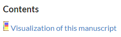
Sur le site Pinakes, les utilisateurs ont également la possibilité de consulter les données détaillées des manuscrits. Sur la page de résultats d'un manuscrit (exemple), il y a plusieurs options dans le coin supérieur droit:
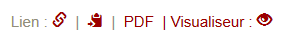
En cliquant sur l'option "Visualiseur", les utilisateurs sont redirigés vers le service web StruViMan dans un nouvel onglet de la même fenêtre de navigateur, analogue au projet PtB. Les deux onglets sont liés par un SessionID. D'autres manuscrits sont donc également affichés dans l'onglet StruViMan actuellement ouvert. Si plusieurs onglets ou fenêtres StruViMan sont ouverts, ils s'affichent tous de la même manière (au plus tard après un rafraîchissement).
La mise en œuvre de StruViMan a été effectuée conformément aux normes de programmation web actuelles : Vue.js, un framework web JavaScript, HTML5 et CSS3. La visualisation de StruViMan est un graphique vectoriel (SVG).
Les données de la base de données sont enregistrées dans un fichier XML en utilisant PHP et un schéma XML (XSD) et envoyées à notre serveur via JSON (plate-forme serveur : Node.js).
Le composant côté serveur est nécessaire car StruViMan n'est pas hébergé sur le même serveur que la base de données de Pinakes et PtB et il est donc plus facile pour le serveur StruViMan de recueillir et d'analyser les données XML de la base de données avant de les transmettre au navigateur. Il peut également être facilement étendu pour interagir avec d'autres systèmes/serveurs dans le futur afin de fournir une fonctionnalité de visualisation. Si vous êtes intéressé, veuillez écrire à l'un des contacts (voir en bas à droite).
À l'avenir, il est également prévu de rendre le logiciel accessible au public en tant qu'Open Source.
La visualisation représente la tranche inférieure d’un livre (tranche de queue).
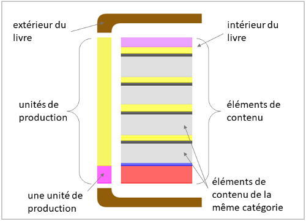
Unités de production : le dos du livre se compose d’une barre divisée dans cet exemple en deux parties de couleurs différentes. Il montre combien d’unités de production sont présentes dans le manuscrit et à quel endroit du manuscrit elles apparaissent.
Éléments de contenu : Les pages du livre donnent non seulement une vue d’ensemble du contenu du codex, mais elles montrent aussi quelle place occupe chaque élément. Il est facile d'identifier les sections du livre qui appartiennent à la même unité de production.
Grâce à la coloration des unités de production, on peut facilement les distinguer. Les mêmes catégories se voient attribuer la même couleur pour les éléments de contenu (exemple : Imagines -> noir). Les unités de production et les éléments de contenu n'ont jamais la même couleur. Toutes les couleurs peuvent être personnalisées en mode avancé.
Il existe deux domaines de travail différents, chacun offrant un certain nombre
d'options :
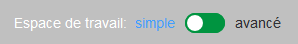
Dans l'espace de travail simple, l'utilisateur ne peut effectuer aucun réglage et il est particulièrement adapté aux nouveaux utilisateurs ou aux utilisateurs occasionnels. Ce mode est actif lorsque l'interrupteur situé dans le coin supérieur droit de la fenêtre principale est réglé sur "simple" et que le cadre prend une couleur gris clair.
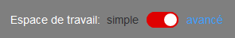
Dans l'espace de travail avancé, il existe plusieurs options pour ajuster le graphique. Il est actif lorsque le commutateur est réglé sur "avancé" et que l'image prend une couleur gris foncé.
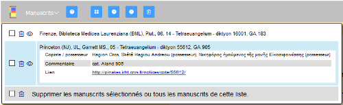
Tous les manuscrits présents dans une session particulière sont listés sous Manuscrits (en haut à gauche de l’écran). Un simple clic sur un titre ouvre un onglet avec des informations de base sur le manuscrit et met en avant la visualisation correspondante. Un double clic sur le titre rouvre la fenêtre de visualisation si elle a été auparavant fermée. En outre, le symbole peut être cliqué pour ouvrir la visualisation d'un manuscrit.
Les manuscrits peuvent être retirés de la liste de différentes manières:
Les options de menu suivantes apparaissent lorsque plusieurs manuscrits sont chargés dans la liste (à l’exception de l’icône d’aide, qui est toujours présente) :
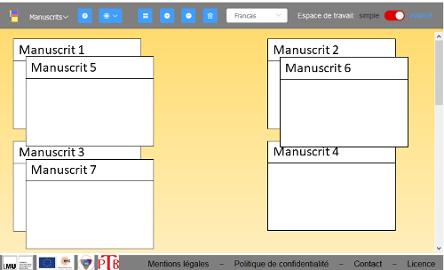
En plus de toutes les options de la zone simple, plusieurs réglages sont possibles ici qui modifient l'affichage de la visualisation. Ces options sont disponibles, sauf la première, également au niveau de la fenêtre du manuscrit, où elles peuvent être définies individuellement pour chaque manuscrit.
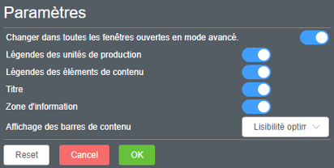
Toutes les modifications sont immédiatement visibles et peuvent être acceptées (OK) ou rejetées (Cancel). Reset réinitialise tous les paramètres.
Il est possible d'ouvrir un nombre illimité de fenêtres de manuscrits. Par exemple, des manuscrits similaires peuvent être facilement comparés entre eux. L'utilisateur a la possibilité de travailler dans deux modes différents indépendamment de la fenêtre principale (celui avec le fond bleu est le mode actif) :
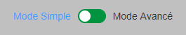 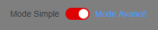
Pourquoi y a-t-il deux modes différents ?
StruViMan est conçu pour être intuitif et facile à utiliser par les débutants. De plus, le mode simple permet un accès rapide et aisé aux visualisations des différents manuscrits sans que l’utilisateur n’ait à modifier les paramètres.
Pour les utilisateurs qui veulent davantage contrôler des aspects précis de leurs visualisations de manuscrits, le mode avancé offre plus d’options et une plus grande personnalisation de l’affichage.
Informations de base:
La fenêtre a une taille fixe en mode simple, la taille de la fenêtre ne peut donc pas être modifiée. Même les manuscrits comportant de nombreux éléments de contenu sont initialement affichés dans la taille standard. Toutefois, il est possible de les agrandir en cliquant sur "+++" (sous le dernier élément de contenu affiché).
Si l'utilisateur passe sur un élément de contenu du graphique, l'information correspondante s'affiche dans une fenêtre contextuelle. Si l'utilisateur clique sur un élément du graphique, les informations associées de la base de données s'affichent dans la zone d'information inférieure. Si vous cliquez sur une zone blanche de la fenêtre, des méta-informations sur l'écriture manuscrite s'affichent dans la zone d'information.
Chaque passage à ce mode est une réinitialisation du graphique. Les paramètres du mode avancé sont ensuite réinitialisés aux paramètres par défaut.
La taille des segments de contenu est toujours affichée en mode simple dans la variante Meilleure lisibilité. Cela signifie que la taille des segments est ajustée de façon logarithmique.
Description des différentes fonctions:
Un clic sur cette icône ouvre une nouvelle fenêtre dans laquelle l’utilisateur peut cliquer avec le bouton droit de la souris et enregistrer l’image localement sur son ordinateur.
Cette fenêtre peut être fermée en cliquant sur la croix de teinte gris clair dans le coin supérieur droit.
Montrer ou cacher les Légendes des unités de production et les Légendes des éléments de contenu.
Informations de base:
Tous les réglages effectués en mode avancé sont conservés même si l'écriture est fermée (mais pas supprimée de la liste). La même écriture peut être ouverte plusieurs fois et des réglages différents peuvent être effectués à chaque ouverture. Chaque fois que vous repassez en mode simple, le graphique est réinitialisé. Les paramètres du mode avancé sont ensuite réinitialisés aux paramètres par défaut.
La taille de la fenêtre peut être modifiée en mode avancé dans toutes les directions. Par exemple, vous pouvez facilement redimensionner la fenêtre si vous ne voyez pas tout le texte d'une étiquette (en zoomant la fenêtre vers la droite). La taille de la zone d'information s'adapte automatiquement à la quantité de texte.
Description des différentes fonctions :
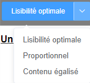
La première fonction à gauche permet à l’utilisateur de déterminer comment les barres de contenu sont affichées.
Un clic sur cette icône ouvre une nouvelle fenêtre dans laquelle l’utilisateur peut cliquer avec le bouton droit de la souris et enregistrer l’image localement sur son ordinateur.
Cette fenêtre peut être fermée en cliquant sur la croix de teinte gris clair dans le coin supérieur droit.
Les quatre curseurs suivants permettent à l’utilisateur d’afficher ou de masquer différentes légendes et zones de texte dans les fenêtres de visualisation :
Toutes les modifications sont immédiatement visibles et peuvent être acceptées (OK) ou rejetées (Cancel). Reset réinitialise tous les paramètres.
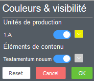Option 1 : Ici peut être modifiée la couleur des unités de production (« 1.A », dans cet exemple) et de chaque catégorie (« Testamentum nouum », dans cet exemple) qui figurent dans ce manuscrit.
Option 2 : Chaque unité de production et chaque catégorie peuvent être cachées séparément. L’espace ainsi libéré est alors automatiquement rempli par les éléments restants.
Toutes les modifications sont immédiatement visibles et peuvent être acceptées (OK) ou rejetées (Cancel). Reset réinitialise tous les paramètres.